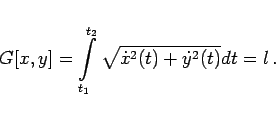

Inhalt Index DeskTop Bronstein

 Variationsrechnung Variationsaufgaben mit Funktionen einer Veränderlichen
Variationsrechnung Variationsaufgaben mit Funktionen einer Veränderlichen


Bei manchen Variationsaufgaben ist es zweckmäßig, die Extremale nicht in der expliziten Form y=y(x) anzugeben, sondern von deren Parameterdarstellung
| (10.38) |
auszugehen, wobei t1 und t2 die den Punkten (a,A) und (b,B) entsprechenden Parameterwerte sein sollen. Die einfache Variationsaufgabe lautet dann
mit den Randbedingungen
| (10.39b) |
Mit  und
und  werden, wie bei der Parameterdarstellung üblich, die Ableitungen von x und y nach dem Parameter t bezeichnet.
werden, wie bei der Parameterdarstellung üblich, die Ableitungen von x und y nach dem Parameter t bezeichnet.
Das Variationsproblem (10.39a) ist nur dann sinnvoll, wenn der Wert des Integrals von der Parameterdarstellung der Extremale unabhängig ist. Es gilt: Damit das Integral in (10.39a) von der Parameterdarstellung der Kurve, die die Punkte (a,A) und (b,B) verbindet, unabhängig ist, muß F eine positiv homogene Funktion sein, d.h., es muß
gelten.
Da die Variationsaufgabe (10.39a) als Spezialfall von (10.34) aufgefaßt werden kann, lauten die zugehörigen EULERschen Differentialgleichungen
| (10.41) |
Diese sind nicht unabhängig voneinander, sondern äquivalent der sogenannten WEIERSTRASSschen Form der EULERschen Differentialgleichung:
mit
| (10.42b) |
Ausgehend von der Berechnung des Krümmungskreisradius R einer in Parameterdarstellung gegebenen Kurve, erfolgt die Berechnung des Krümmungskreisradius der Extremalen unter Berücksichtigung von (10.42a) gemäß
| Beispiel |
|
Das isoperimetrische Problem (10.8a bis 10.8c) lautet in Parameterdarstellung |
| (10.43a) |
mit
|  | (10.43b) |
Diese Variationsaufgabe mit Nebenbedingung geht gemäß (10.26) mit
| (10.43c) |
in eine Variationsaufgabe ohne Nebenbedingung über. Man sieht, das H die Bedingung (10.40) erfüllt, also eine positiv homogene Funktion vom Grade 1 ist. Weiterhin gilt
| (10.43d) |
so daß man aus (10.42c) für den Krümmungskreisradius erhält. Da  konstant ist, sind die Extremalen Kreise.
konstant ist, sind die Extremalen Kreise.